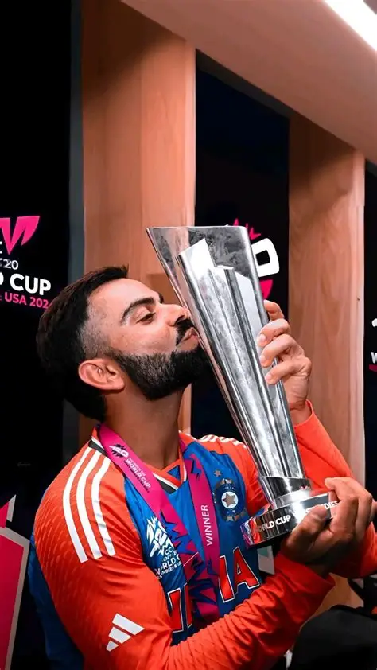

Virat Kohli

- Virat Kohli is one of the most celebrated cricketers in the world. Known for his fierce competitiveness, elegant stroke play, and unmatched consistency, he has redefined modern cricket.
- Born in Delhi in 1988, Kohli rose through the ranks with his performance in the U-19 World Cup and quickly became a cornerstone of Indian cricket. His leadership and fitness revolutionized the team’s culture.
- Kohli is admired for his resilience and mental strength. Whether bouncing back from form slumps or leading India through high-pressure matches, his ability to stay focused and deliver has earned him global respect.
- Married to Bollywood actress Anushka Sharma, Kohli’s off-field presence is just as impactful. Together, they’ve championed causes like animal welfare and mental health, making him a role model beyond cricket.